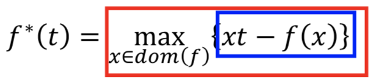
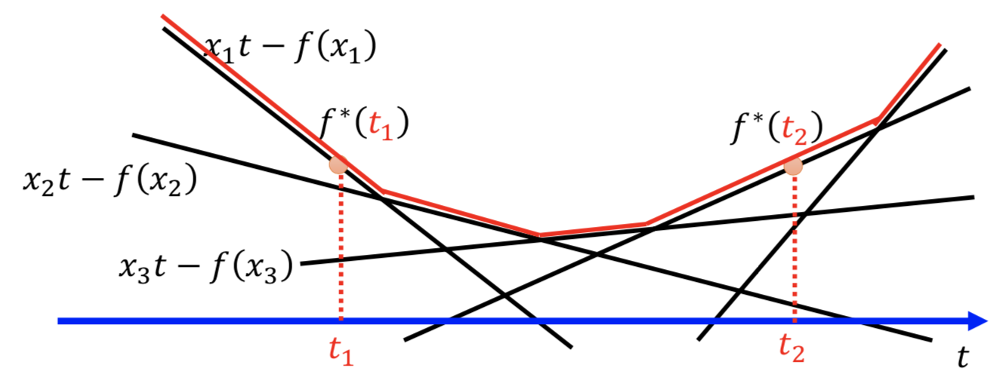
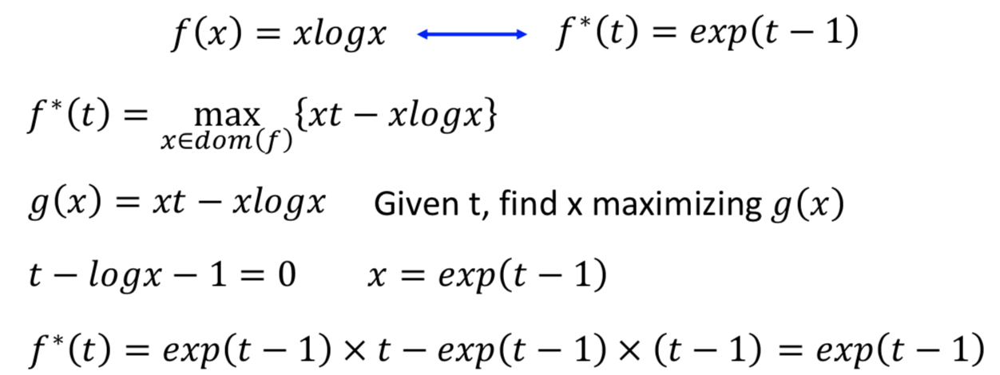

凸函数
凸函数的定义：$f(\theta x+(1-\theta)y) \leq \theta f(x)+(1-\theta)f(y)$
其含义就是：函数图像在直线下边。
Jensen不等式
凸函数定义推广到一般形式，即可得到Jensen不等式，即
$\theta_1,…\theta_k\geq0, \theta_1+…+\theta_k=1$时，
$f(\theta_1x_1+…+\theta_kx_k) \leq \theta_1f(x_1)+…+\theta_kf(x_k)$
扩展理解：对于$\theta_1,…\theta_k\geq0, \theta_1+…+\theta_k=1$，如果把$\theta_k$看出$x_k$的概率的话，那$\theta_1x_1+…+\theta_kx_k$就表示x的期望，右边式子就表示$f(x)$的期望，于是上式就可以写成$f(E(x))\leq E(f(x))$，这就是Jensen不等式，注意函数f要满足凸函数。
共轭函数
定义
原函数$f:R^n\to R$共轭函数定义：

这个式子的意思是：求$xt-f(x)$关于x和y函数在定义域内的上界，将这个上界形成的函数定义为共轭函数。下图红色部分就是上界

定义式中$f(x)$不一定是凸函数
共轭函数一定是凸函数（由图可知）
凸函数的共轭函数的共轭函数是其本身
如何求共轭函数

Fenchel不等式
由共轭函数定义可知，$f^(t) \geq xt-f(x)$ 移项可得 $f(x)+f^(t) \geq xt$ 这就是Fenchel不等式。